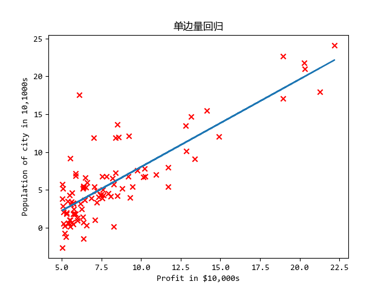
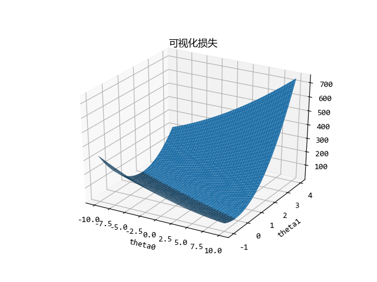
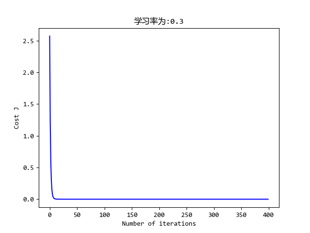
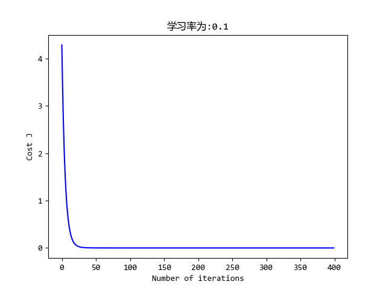
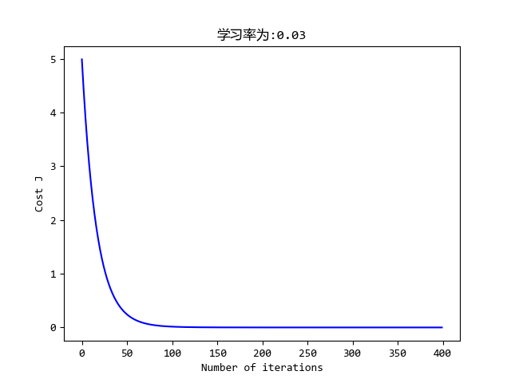
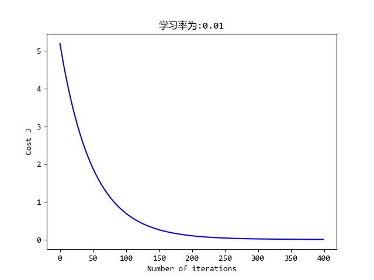

机器学习作业第一周
这是吴恩达老师的机器学习作业….并不是我们学校的 hh
因为机器学习这个课是老师在2014年讲的,那时候Python还不火,所以老师讲的时候用的是ocatve,现在我准备都用Python写.
总结
这是第一周作业,单/多变量线性回归
注意损失函数求导出来的结果,更新方式是不一样的
python中的矩阵和list类型非常蛋疼,不如matlab全是矩阵就好了给X加列,可以利用矩阵乘法快速求解
绘3维图时要用
meshgrid函数连接变量numpy.std函数要加上参数ddof=1，因为他的标准差默认除以n
重要公式的推导
这里有一个多变量的梯度更新，需要把原来的损失函数进行求导，因为现在是每一个变量都是向量，所以推导的时候我纠结了好一会。具体如下：
注：上标为行数，下标为列数，设数据X=[m,n]
\[ \begin{aligned} \theta_j &= \theta_j - \alpha\frac{\partial}{\partial\theta_j}J(\theta) = \theta_j - \alpha\frac{1}{m}\sum_{i=1}^{m}(h_\theta(x^{(i)}) - y^{(i)})*x_j^{(i)} \\ \theta_j &-=\frac{ \alpha}{m}\sum_{i=1}^{m}(h_\theta(x^{(i)}) - y^{(i)})*x_j^{(i)} \end{aligned} \] 现在我们分析此部分\(\sum_{i=1}^{m}(h_\theta(x^{(i)}) - y^{(i)})*x_j^{(i)}\)：
注：以下都省略了常数项\(\alpha/m\)
\[ \begin{aligned} \because &x=[m,n]\ \ \ y=[m,1]\\ \therefore &x^{(i)} =[1,n]\ \ \ y^{(i)}=[1,1]\ \ \ \theta=[n,1] \\ \Rightarrow &h_\theta(x^{(i)})=x^{(i)}*\theta=[1,1]\\ \Rightarrow &h_\theta(x^{(i)})-y^{(i)}=[1,1]=E_\theta^{(i)}\\ \because &\sum_{i=1}^{m}(h_\theta(x^{(i)}) - y^{(i)})*x_j^{(i)}=\sum_{i=1}^{m}E_\theta^{(i)}*x_j^{(i)}\\ &=E_\theta^{(0)}*x_j^{(0)}+E_\theta^{(1)}*x_j^{(1)}+\ldots+E_\theta^{(m)}*x_j^{(m)}\\ \therefore \Theta&= \begin{bmatrix} x_1^1E_1 + x_2^1E_1 + \ldots + x_m^1E_1 \\ x_1^2E_2 + x_2^2E_2 + \ldots + x_m^2E_2 \\ x_1^nE_n + x_2^nE_n + \ldots + x_m^nE_n \\ \end{bmatrix} \end{aligned} \]
将其放到全局的矩阵中就是这样：
\[ \begin{aligned} X&=\begin{bmatrix} x_1^1 & x_2^1 & \ldots & x_n^1 \\ \vdots & \vdots & \ldots & \vdots \\ x_1^m & x_2^m & \ldots & x_n^1 \\ \end{bmatrix}\\ Y&=\begin{bmatrix} y_1^1 \\ \vdots \\ y_1^m \\ \end{bmatrix}\\ \theta&=\begin{bmatrix} \theta_1^1 \\ \vdots \\ \theta_1^n \\ \end{bmatrix} \\ \Theta-&=X^T(h_\theta(X) -Y) = X^T(X*\Theta-Y) \\ &= \begin{bmatrix} x_1^1 & x_1^2 & \ldots & x_1^m \\ \vdots & \vdots & \ldots & \vdots \\ x_n^1 & x_n^2 & \ldots & x_n^m \\ \end{bmatrix}* (\begin{bmatrix} x_1^1 & x_2^1 & \ldots & x_n^1 \\ \vdots & \vdots & \ldots & \vdots \\ x_1^m & x_2^m & \ldots & x_n^1 \\ \end{bmatrix}* \begin{bmatrix} \theta_1^1 \\ \vdots \\ \theta_1^n \\ \end{bmatrix}- \begin{bmatrix} y_1^1 \\ \vdots \\ y_1^m \\ \end{bmatrix}) \\ &= \begin{bmatrix} x_1^1 & x_1^2 & \ldots & x_1^m \\ \vdots & \vdots & \ldots & \vdots \\ x_n^1 & x_n^2 & \ldots & x_n^m \\ \end{bmatrix}* \begin{bmatrix} h_1^1 - y_1^1 \\ \vdots \\ h_1^m - y_1^m \\ \end{bmatrix}\\ &= \begin{bmatrix} x_1^1E_1 + x_2^1E_1 + \ldots + x_m^1E_1 \\ x_1^2E_2 + x_2^2E_2 + \ldots + x_m^2E_2 \\ x_1^nE_n + x_2^nE_n + \ldots + x_m^nE_n \\ \end{bmatrix} \end{aligned} \]
即推出：
\[\Theta-=\frac{\alpha}{m}X^T(X*\Theta-Y)\] # 代码
import matplotlib.pyplot as plt
from mpl_toolkits.mplot3d import Axes3D
import numpy as np
# 加载数据
def load_data(filepath: str)->np.ndarray:
dataset = []
f = open(filepath)
for line in f:
dataset.append(line.strip().split(','))
return np.asfarray(dataset)
# 定义推演函数
def h_fuc(x: float, theta: np.ndarray)->float:
return theta[0, 0]+theta[0, 1]*x
# z定义损失函数
def computeCost(X: np.ndarray, y: np.ndarray, theta: np.ndarray)->float:
m = y.shape[0]
return np.sum(np.power(np.dot(X, theta)-y, 2))/(2*m)
# 多参数损失函数计算
def computeCostMulti(X: np.ndarray, y: np.ndarray, theta: np.ndarray)->float:
m = y.shape[0]
return np.sum(np.power(np.dot(X, theta)-y, 2))/(2*m)
# 更新参数
def gradientDescent(X: np.ndarray, y: np.ndarray, theta: np.ndarray, alpha: float, num_iters: int):
m = y.shape[0]
j_history = np.zeros((num_iters, 1))
theta_s = theta.copy()
for i in range(num_iters):
theta[0, 0] -= alpha / m * np.sum(np.dot(X, theta_s) - y)
theta[1, 0] -= alpha / m * np.sum((np.dot(X, theta_s) - y)*X)
# 必须同时更新theta(1)和theta(2)
theta_s = theta
j_history[i, 0] = computeCost(X, y, theta)
return j_history
def gradientDescentMulti(X: np.ndarray, y: np.ndarray, theta: np.ndarray, alpha: float, num_iters: int):
m = y.shape[0]
j_history = np.zeros((num_iters, 1))
for i in range(num_iters):
theta -= alpha*(X.T@(X@theta-y))/m
j_history[i, 0] = computeCostMulti(X, y, theta)
return theta, j_history
def featureNormalize(X: np.ndarray):
X_norm = X
mu = np.zeros((1, X.shape[0]))
sigma = np.zeros((1, X.shape[0]))
mu = np.mean(X, axis=0)
# 加上ddof=1 因为matlab中默认除以 n-1 np 默认除以 n
sigma = np.std(X, axis=0, ddof=1)
X_norm = (X-mu)/sigma
return X_norm, mu, sigma
# 正规方程求解
def normalEqn(X: np.ndarray, y: np.ndarray):
theta = np.linalg.inv(X.T@X)@X.T@y
return theta
if __name__ == "__main__":
# 步骤一（替换sans-serif字体）
plt.rcParams['font.sans-serif'] = ['YaHei Consolas Hybrid']
# 步骤二（解决坐标轴负数的负号显示问题）
plt.rcParams['axes.unicode_minus'] = False
""" 以下为单变量回归 """
dataset = load_data('machine_learning_exam/week1/ex1data1.txt')
m = dataset.shape[0]
# x 添加一列 便于矩阵计算 x=[m,2]
X = np.c_[np.ones((m, 1)).reshape(-1, 1),
np.array(dataset[:, 0]).reshape(-1, 1)]
Y = np.array(dataset[:, 1]).reshape(-1, 1)
# # theta 设置为列向量 theta=[2,1] !!!这里一定要设置数据类型!!!
theta = np.array([0, 0], dtype=float, ndmin=2).reshape(-1, 1)
iterations = 1500
alpha = 0.01
cost = computeCost(X, Y, theta)
j_history = gradientDescent(X, Y, theta, alpha, 1500)
plt.figure()
plt.scatter(X[:, 1], Y, c='r', marker='x')
plt.plot(X[:, 1], np.dot(X, theta))
plt.xlabel('Profit in $10,000s')
plt.ylabel('Population of city in 10,1000s')
plt.title('单边量回归')
# 可视化损失
theta0_vals = np.linspace(-10, 10, 100.0)
theta1_vals = np.linspace(-1, 4, 100.0)
# 这里必须要加 不然画出来只用中间一条
theta0_vals, theta1_vals = np.meshgrid(theta0_vals, theta1_vals)
J_vals = np.zeros((len(theta0_vals), len(theta1_vals)))
for i in range(len(theta0_vals)):
for j in range(len(theta1_vals)):
t = np.array([theta0_vals[i, j], theta1_vals[i, j]]).reshape(-1, 1)
J_vals[i, j] = computeCost(X, Y, t)
# print("J_vals[{}, {}]={}".format(i,j,J_vals[i,j]))
fig1 = plt.figure()
ax = fig1.gca(projection='3d')
surf = ax.plot_surface(theta0_vals, theta1_vals, J_vals)
plt.xlabel('theta0')
plt.ylabel('theta1')
plt.title('可视化损失')
""" 以下为多变量回归 """
# ===========数据标准化=============
dataset = load_data('machine_learning_exam/week1/ex1data2.txt')
m = dataset.shape[0]
X = np.array(dataset[:, :2]) # x=[m,2]
Y = np.array(dataset[:, 2]).reshape(-1, 1) # y=[m,1]
# 归一化特征值
X, mu, sigma = featureNormalize(X)
# x add a cloum
X = np.c_[np.ones((m, 1)).reshape(-1, 1), X]
# ===========梯度下降=============
# 选择学习率
iterations = 8500
alpha = 0.01
# theta 列向量 theta=[3,1]
theta = np.zeros((3, 1))
theta, j_history = gradientDescentMulti(X, Y, theta, alpha, iterations)
# 绘画
plt.figure()
plt.plot(range(len(j_history)), j_history, '-b')
plt.xlabel('Number of iterations')
plt.ylabel('Cost J')
plt.title('学习率为:{}'.format(alpha))
# plt.show()
print('Theta computed from gradient descent:', theta[:, 0])
# 估计
price = np.ones((1, 3))
price[0, 1:] = (np.array([1650, 3])-mu)/sigma
price = price@theta
print('Predicted price of a 1650 sq-ft, 3 br house (using gradient descent):', price)
""" 以下使用正规方程求解 """
# ===========数据读取=============
dataset = load_data('machine_learning_exam/week1/ex1data2.txt')
m = dataset.shape[0]
X = np.array(dataset[:, :2]) # x=[m,2]
Y = np.array(dataset[:, 2]).reshape(-1, 1) # y=[m,1]
# x add a cloum
X = np.c_[np.ones((m, 1)).reshape(-1, 1), X]
# ===========梯度下降=============
# 选择学习率
iterations = 400
alpha = 0.01
# theta 列向量 theta=[3,1]
theta = normalEqn(X, Y)
# 估计
print('Theta computed from normal equations:', theta[:, 0])
price = np.array([1, 1650, 3])@theta
print('Predicted price of a 1650 sq-ft, 3 br house (using normal equations):', price)
plt.show()执行：
➜ Machine_learning /usr/bin/python3 /media/zqh/程序与工程/Python_study/Machine_learning/machine_learning_exam/week1/ex1.py
Theta computed from gradient descent: [ 340412.65957447 110631.05027884 -6649.47427082]
Predicted price of a 1650 sq-ft, 3 br house (using gradient descent): [[ 293081.46433489]]
Theta computed from normal equations: [ 89597.9095428 139.21067402 -8738.01911233]
Predicted price of a 1650 sq-ft, 3 br house (using normal equations): [ 293081.4643349]效果
     